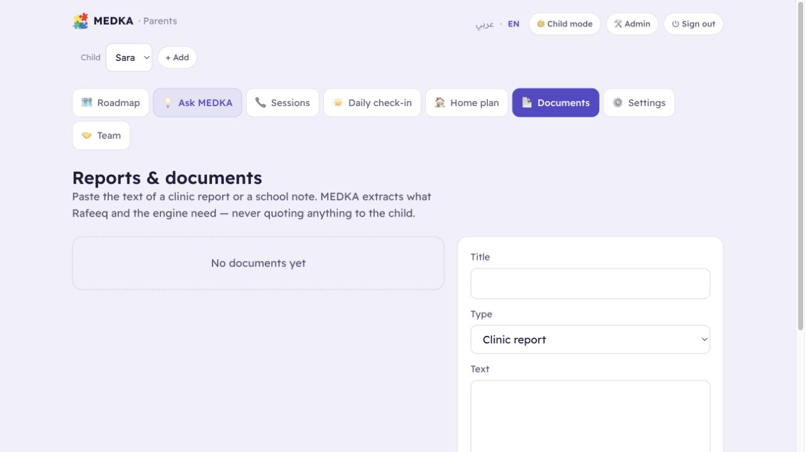
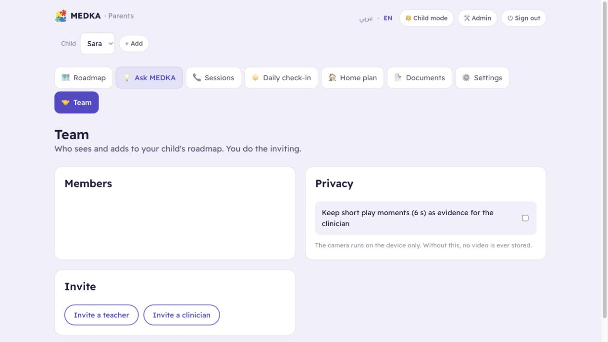
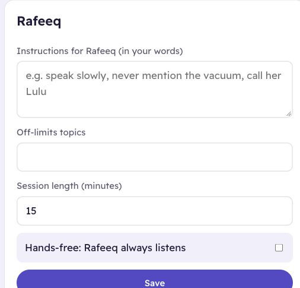

جولة في لوحة ولي الأمر
يقدر ولي الأمر يسجّل ملاحظاته اليومية، ويتابع ما يتدرّب عليه الطفل، ويقرأ ملخصات اللعب. الصور من حساب مدكا التجريبي المتاح للجميع.
المتابعة اليومية
تسألك المتابعة اليومية كيف كان يوم طفلك، وكيف كان نومه، وهل جرّب أنشطة اليوم. وتقدر تضيف ملاحظة مكتوبة أو صوتية قصيرة في التطبيق.
تساعد هذه الملاحظات فريق الرعاية على فهم ما يحدث بين الزيارات، ويمكن إضافتها إلى خارطة النمو.

تلخّص المتابعة القصيرة ما حدث في البيت.
الخطة المنزلية
تعرض الخطة أنشطة الأسبوع وتربط كل نشاط بهدف من أهداف النمو. ويمكن للنظام اقتراح أنشطة يراجعها الأخصائي.
تعرض لوحة ولي الأمر أيضًا الوقت المخصّص للعب وأفكارًا للتدرّب أثناء الروتين اليومي.

يمكن لفريق الرعاية ربط أنشطة البيت بأهداف خارطة النمو.
ملخصات الجلسات
يوضّح مدكا أن ملخّص ما بعد النشاط يشمل مزاج الطفل وما نجح فيه وما صَعُب عليه. وتجمع شاشة الجلسات هذه الملخصات والتنبيهات المرتبطة بها.
يذكر التطبيق أن ولي الأمر يقدر يطّلع على نص الجلسة عند توفره. وسجلّ الجلسات فارغ في الحساب التجريبي الظاهر هنا.

تظهر ملخصات الأنشطة والتنبيهات في شاشة الجلسات.
اسأل مدكا
تتيح ميزة «اسأل مدكا» لولي الأمر طرح الأسئلة. وتشمل الاقتراحات كيف كان الأسبوع، وما يمكن التدرّب عليه في البيت، وما لاحظه رفيق، وأين تعثّر التقدّم.
يوضّح مدكا أن الإجابات تستند إلى خارطة الطفل وسجلّ أنشطته وملاحظات فريق الرعاية.

تساعد الأسئلة المقترحة مقدّم الرعاية على مراجعة أسبوع الطفل.
التقارير والمستندات
تتيح شاشة المستندات للكبار إضافة عنوان ونص ملاحظة مدرسية أو تقرير من العيادة أو ملاحظة عامة. ويوضّح مدكا أنه يستخلص منها المعلومات المرتبطة بخارطة النمو وأنشطة رفيق.
يقدر المعلّمون والأخصائيون الاستفادة من هذه المعلومات عند مناقشة المقترحات والتقدّم مع الأسرة.


يوضّح الحساب التجريبي خيارات تصنيف التقرير أو الملاحظة وإضافتها.
دعوات فريق الرعاية وصلاحياته
يقدر ولي الأمر يدعو المعلّمين والأخصائيين إلى خارطة الطفل ويحدّد صلاحياتهم. وتعرض شاشة الفريق أيضًا خيار الموافقة على الاحتفاظ بمقاطع لعب قصيرة لتوثيق الملاحظات.
اقرأ عن الصلاحيات وإعدادات الأسرة

تستخدم الأسرة شاشة الفريق لإدارة الدعوات وتحديد ما إذا كان يمكن الاحتفاظ بمقاطع قصيرة.
تفضيلات رفيق والمكافآت
يقدر ولي الأمر من الإعدادات يضيف توجيهات لرفيق، ويحدّد المواضيع التي يفضّل يتجنّبها، ويضبط مدّة الجلسة. ويتيح مدكا ربط النجوم التي يكسبها الطفل مقابل المحاولة بمكافآت تختارها الأسرة.
يمكن للأسرة إضافة الكلمات التي يتدرّب عليها الطفل واهتماماته وما يساعده على الهدوء.


تتيح شاشة التفضيلات لمقدّم الرعاية توجيه رفيق في طريقة الحديث والتعامل مع الطفل.